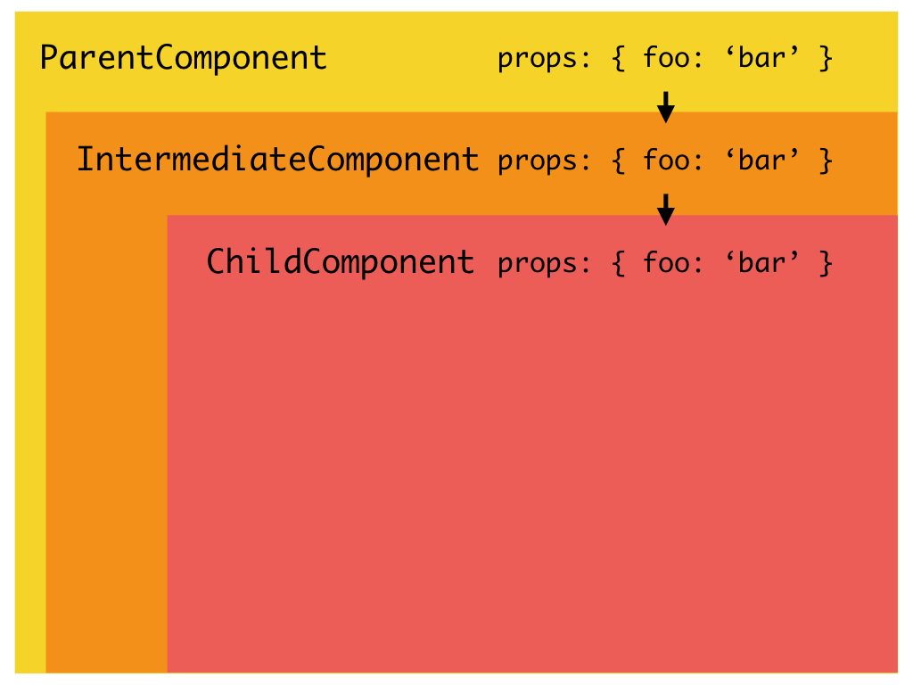
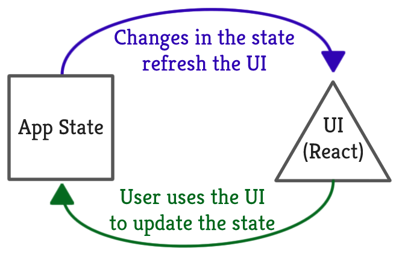
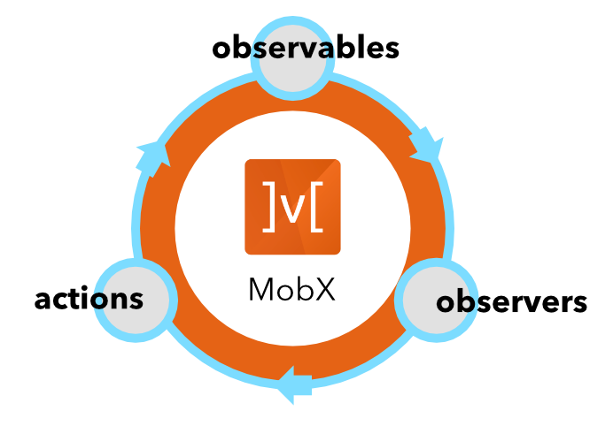

React
Jefferson Mariano de Souza
 /studiojms
/studiojmsO que é react?
React é uma biblioteca que auxilia na construção de interfaces.
História
- 2011 - Criada por Jordan Walke (Facebook)
- 2011 - Utilizada no mural de notícias
- 2012 - Utilizada no Instagram
- 2013 - Anunciada na JsConf (virou opensource)
- 2015 - Surgimento do React Native
Quem usa?
Para que serve?
- Criar interfaces
- Renderizar componentes
Vantagens
- Fácil de aprender
- Reaproveitamento de código
- Comunidade ativa
- Sintaxe amigável na construção de componentes (HTML)
- Grandes empresas utilizando
- É rápido
Como ele funciona?
Virtual DOM
O que é DOM?

Virtual DOM

Comparação: React vs JQuery

JQuery
A manipulação do DOM (operação custosa) fica nas mãos do desenvolvedor
Toda modificação dispara uma alteração no DOM
React
Otimiza a manipulação do DOM, alterando somente o necessário
Alterações são enviadas em lote, minimizando impacto no DOM

Sintaxe
A sintaxe mais utilizada para a criação de componentes em React é JSX
JSX é uma extensão da sintaxe do JavaScript que lembra XML
React é baseado em componentes
Existem 2 tipos de componentes
- Functional
- Class
Propriedades
- Dados recebidos pelo componente
- Imutáveis
- Podem ser passadas de um componente para outro
- Acessível através do atributo props (this.props)
Propriedades
Estado
Dados gerenciados pelo componente
- Mutável
- Acessível através do atributo state (this.state)
- Alterável através da função this.setState()
- Específico de cada componente (cada um tem o seu)
Estado
React way
E o que eu preciso pra usar react?
Dependências
- nodejs (LTS) plataforma base
- yarn / npm npm duplicava dependencias (corrigido na versão 5)
- nvm (Node Version Manager)
- babel

Hands on - vamos brincar?
Exercícios de fixação
1. Criar um componente React que exiba uma mensagem de bem vindo + o seu nome.
Ex: "Bem vindo Jefferson"
2. Criar um componente React que exiba uma mensagem de bem vindo para o nome que for digitado em um input.
Estilização

Espresso (Saturn V)
http://espresso.synchro.com.brExercícios de fixação
3. To-do list
História
- Em 2014, problema com contagem de mensagens no facebook
MVC
Flux
Arquitetura
Para que serve?
Gerenciar os dados da aplicação
- entrada de dados do usuario
- dados de uma api
- ações do usuário
Controlar como a aplicação deve se comportar com base na mudança destes dados
Quando devo usar?
- Compartilhar estado entre componentes
- Centralizar as regras de negócio da aplicação
- Agir com efeitos colaterais

Implementações de Flux

Mobx
Facilita a implementação de flux

Mobx
Mobx
Usando Mobx com React
Configuração
Usando create-react-app, usar: https://tombuyse.be/blog/using-mobx-decorators-in-create-react-app-v3
Mãos à obra
Apresentação disponível em: http://studiojms.github.io/react-getting-started-presentation